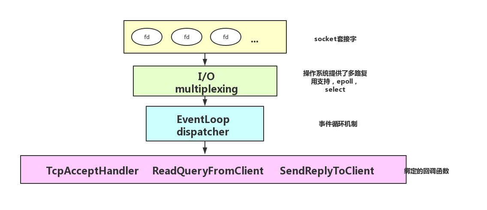

即阅读和学习Redis实现的
I/O-multiplexing. 继Epoll学习笔记，Reactor事件驱动网络模型，之后又一篇以剖析著名Redis源码在网络I/O上面是如何实现Reactor，以及其高性能的原因的小作。
Redis中Reactor实现主要由ae.c ae.h为上层，ae_epoll.c ae_evport.c ae_select.c ae_kqueue.c为底层提供跨平台的支持（通过条件编译来控制）。本文自上而下逐层剖析, 源码虽为枯燥，但可以更加深刻的理解Reactor模型在优秀的开源项目中是如何实现的。
Redis的事件驱动的机制除了文件事件（网络事件）外，还有时间事件。在事件循环中会处理时间事件和网络事件，整个事件驱动主入口函数为int aeProcessEvents(aeEventLoop *eventLoop, int flags);.
Redis事件类似分为三个
时间事件 aeTimeEvent：事件函数为serverCron:
Lazy expiration之外，就是事件事件中定期收集BGSAVE/AOF读写，即rdb，aof备份操作文件事件 aeFileEvent：事件函数为acceptTcpHandler:
待处理的事件 aeFiredEvent: 即待处理的文件事件，将epoll返回的就绪的文件描述符进行一层封装，aeApiPoll返回。

xxxxxxxxxx/* File event structure，文件事件 */typedef struct aeFileEvent { int mask; /* one of AE_(READABLE|WRITABLE|BARRIER) 掩码标识文件描述符的状态*/ aeFileProc *rfileProc; // 读程序 aeFileProc *wfileProc; // 写程序 void *clientData;} aeFileEvent;/* Time event structure，时间事件 */typedef struct aeTimeEvent { long long id; /* time event identifier. */ long when_sec; /* seconds */ long when_ms; /* milliseconds */ aeTimeProc *timeProc; aeEventFinalizerProc *finalizerProc; void *clientData; struct aeTimeEvent *prev; // 时间事件链表的上一个节点 struct aeTimeEvent *next; // 时间事件链表的下一个节点} aeTimeEvent;/* A fired event 已触发的事件，由底层epoll_wait或select返回fd，并封装了一层 */typedef struct aeFiredEvent { int fd; int mask;} aeFiredEvent;/* State of an event based program，事件循环主数据结构 */typedef struct aeEventLoop { int maxfd; /* highest file descriptor currently registered */ int setsize; /* max number of file descriptors tracked */ long long timeEventNextId; time_t lastTime; /* Used to detect system clock skew */ aeFileEvent *events; /* Registered events */ aeFiredEvent *fired; /* Fired events */ aeTimeEvent *timeEventHead; int stop; void *apidata; /* This is used for polling API specific data */ // sleep hook aeBeforeSleepProc *beforesleep; aeBeforeSleepProc *aftersleep;} aeEventLoop;/* Prototypes */aeEventLoop *aeCreateEventLoop(int setsize); // 创建事件驱动reactorvoid aeDeleteEventLoop(aeEventLoop *eventLoop); // 删除事件驱动reactorvoid aeStop(aeEventLoop *eventLoop); int aeCreateFileEvent(aeEventLoop *eventLoop, int fd, int mask, aeFileProc *proc, void *clientData); // 创建文件事件void aeDeleteFileEvent(aeEventLoop *eventLoop, int fd, int mask);int aeGetFileEvents(aeEventLoop *eventLoop, int fd); long long aeCreateTimeEvent(aeEventLoop *eventLoop, long long milliseconds, aeTimeProc *proc, void *clientData, aeEventFinalizerProc *finalizerProc); // 创建时间事件int aeDeleteTimeEvent(aeEventLoop *eventLoop, long long id);int aeProcessEvents(aeEventLoop *eventLoop, int flags); // 事件驱动循环int aeWait(int fd, int mask, long long milliseconds); // 调用epoll_wait返回可用的文件描述符void aeMain(aeEventLoop *eventLoop); // 事件驱动main函数， 调用了aeProcessEvents(eventLoop, AE_ALL_EVENTS|AE_CALL_AFTER_SLEEP)char *aeGetApiName(void);void aeSetBeforeSleepProc(aeEventLoop *eventLoop, aeBeforeSleepProc *beforesleep);void aeSetAfterSleepProc(aeEventLoop *eventLoop, aeBeforeSleepProc *aftersleep);int aeGetSetSize(aeEventLoop *eventLoop);int aeResizeSetSize(aeEventLoop *eventLoop, int setsize);x
int aeCreateFileEvent(aeEventLoop *eventLoop, int fd, int mask, aeFileProc *proc, void *clientData){ // 创建一个文件事件, 典型的一个使用的例子是在整个redis-server启动初始化时，创建监听可读的文件事件，eventHandler为acceptTcpHandler // 在server.c中initServer函数中创建文件事件 if (fd >= eventLoop->setsize) { errno = ERANGE; return AE_ERR; } aeFileEvent *fe = &eventLoop->events[fd]; // 将文件事件注册到eventLoop事件循环中，底层为epoll_ctl添加文件描述符到epoll实例 if (aeApiAddEvent(eventLoop, fd, mask) == -1) return AE_ERR; fe->mask |= mask; // 注册文件事件的handler if (mask & AE_READABLE) fe->rfileProc = proc; if (mask & AE_WRITABLE) fe->wfileProc = proc; fe->clientData = clientData; if (fd > eventLoop->maxfd) eventLoop->maxfd = fd; return AE_OK;}void aeDeleteFileEvent(aeEventLoop *eventLoop, int fd, int mask){ // 删除文件事件 if (fd >= eventLoop->setsize) return; aeFileEvent *fe = &eventLoop->events[fd]; if (fe->mask == AE_NONE) return; /* We want to always remove AE_BARRIER if set when AE_WRITABLE * is removed. */ if (mask & AE_WRITABLE) mask |= AE_BARRIER; aeApiDelEvent(eventLoop, fd, mask); fe->mask = fe->mask & (~mask); if (fd == eventLoop->maxfd && fe->mask == AE_NONE) { /* Update the max fd */ int j; for (j = eventLoop->maxfd-1; j >= 0; j--) if (eventLoop->events[j].mask != AE_NONE) break; eventLoop->maxfd = j; }}int aeGetFileEvents(aeEventLoop *eventLoop, int fd) { if (fd >= eventLoop->setsize) return 0; aeFileEvent *fe = &eventLoop->events[fd]; return fe->mask;}static void aeGetTime(long *seconds, long *milliseconds){ struct timeval tv; gettimeofday(&tv, NULL); *seconds = tv.tv_sec; *milliseconds = tv.tv_usec/1000;}static void aeAddMillisecondsToNow(long long milliseconds, long *sec, long *ms) { long cur_sec, cur_ms, when_sec, when_ms; aeGetTime(&cur_sec, &cur_ms); when_sec = cur_sec + milliseconds/1000; when_ms = cur_ms + milliseconds%1000; if (when_ms >= 1000) { when_sec ++; when_ms -= 1000; } *sec = when_sec; *ms = when_ms;}long long aeCreateTimeEvent(aeEventLoop *eventLoop, long long milliseconds, aeTimeProc *proc, void *clientData, aeEventFinalizerProc *finalizerProc){ // 创建时间事件 // 用在server.c中initServer函数即redis-server初始化时，创建时间事件用于监听客户端超时，去除过期的key等等 // 其时间事件的handler为serverCorn long long id = eventLoop->timeEventNextId++; aeTimeEvent *te; te = zmalloc(sizeof(*te)); if (te == NULL) return AE_ERR; te->id = id; aeAddMillisecondsToNow(milliseconds,&te->when_sec,&te->when_ms); // 注册时间事件的handler函数 te->timeProc = proc; te->finalizerProc = finalizerProc; te->clientData = clientData; te->prev = NULL; // 加入到时间事件的链表中 te->next = eventLoop->timeEventHead; if (te->next) te->next->prev = te; eventLoop->timeEventHead = te; return id;}int aeDeleteTimeEvent(aeEventLoop *eventLoop, long long id){ aeTimeEvent *te = eventLoop->timeEventHead; while(te) { if (te->id == id) { te->id = AE_DELETED_EVENT_ID; return AE_OK; } te = te->next; } return AE_ERR; /* NO event with the specified ID found */}/* Search the first timer to fire. * This operation is useful to know how many time the select can be * put in sleep without to delay any event. * If there are no timers NULL is returned. * * Note that's O(N) since time events are unsorted. * Possible optimizations (not needed by Redis so far, but...): * 1) Insert the event in order, so that the nearest is just the head. * Much better but still insertion or deletion of timers is O(N). * 2) Use a skiplist to have this operation as O(1) and insertion as O(log(N)). * * 在链表中找到最近的时间事件并触发。O(N)时间复杂度。因为redis中的时间事件并不是很多所以。。。 * 两个优化的点：1. 链表按序插入，因此链表头部总是最小的 2. 使用跳跃表达到O(1)取最小值，O(log(N) 插入的时间复杂度 */static aeTimeEvent *aeSearchNearestTimer(aeEventLoop *eventLoop){ aeTimeEvent *te = eventLoop->timeEventHead; aeTimeEvent *nearest = NULL; while(te) { if (!nearest || te->when_sec < nearest->when_sec || (te->when_sec == nearest->when_sec && te->when_ms < nearest->when_ms)) nearest = te; te = te->next; } return nearest;}/* Process time events，执行时间事件 */static int processTimeEvents(aeEventLoop *eventLoop) { int processed = 0; aeTimeEvent *te; long long maxId; time_t now = time(NULL); /* If the system clock is moved to the future, and then set back to the * right value, time events may be delayed in a random way. Often this * means that scheduled operations will not be performed soon enough. * * Here we try to detect system clock skews, and force all the time * events to be processed ASAP when this happens: the idea is that * processing events earlier is less dangerous than delaying them * indefinitely, and practice suggests it is. */ if (now < eventLoop->lastTime) { te = eventLoop->timeEventHead; while(te) { te->when_sec = 0; te = te->next; } } eventLoop->lastTime = now; te = eventLoop->timeEventHead; maxId = eventLoop->timeEventNextId-1; while(te) { long now_sec, now_ms; long long id; /* Remove events scheduled for deletion. */ if (te->id == AE_DELETED_EVENT_ID) { aeTimeEvent *next = te->next; if (te->prev) te->prev->next = te->next; else eventLoop->timeEventHead = te->next; if (te->next) te->next->prev = te->prev; if (te->finalizerProc) te->finalizerProc(eventLoop, te->clientData); zfree(te); te = next; continue; } /* Make sure we don't process time events created by time events in * this iteration. Note that this check is currently useless: we always * add new timers on the head, however if we change the implementation * detail, this check may be useful again: we keep it here for future * defense. */ if (te->id > maxId) { te = te->next; continue; } aeGetTime(&now_sec, &now_ms); if (now_sec > te->when_sec || (now_sec == te->when_sec && now_ms >= te->when_ms)) { int retval; id = te->id; retval = te->timeProc(eventLoop, id, te->clientData); processed++; if (retval != AE_NOMORE) { aeAddMillisecondsToNow(retval,&te->when_sec,&te->when_ms); } else { te->id = AE_DELETED_EVENT_ID; } } te = te->next; } return processed;}/* Process every pending time event, then every pending file event * (that may be registered by time event callbacks just processed). * Without special flags the function sleeps until some file event * fires, or when the next time event occurs (if any). * * If flags is 0, the function does nothing and returns. * if flags has AE_ALL_EVENTS set, all the kind of events are processed. * if flags has AE_FILE_EVENTS set, file events are processed. * if flags has AE_TIME_EVENTS set, time events are processed. * if flags has AE_DONT_WAIT set the function returns ASAP until all * if flags has AE_CALL_AFTER_SLEEP set, the aftersleep callback is called. * the events that's possible to process without to wait are processed. * * The function returns the number of events processed. */int aeProcessEvents(aeEventLoop *eventLoop, int flags){ // 事件事件和文件事件关键函数入口 int processed = 0, numevents; /* Nothing to do? return ASAP AE_TIME_EVENT:所有类型事件都会被执行 AE_FILE_EVENTS:所以文件事件都会被执行 AE_TIME_EVENTS:所有时间事件都会被执行 */ if (!(flags & AE_TIME_EVENTS) && !(flags & AE_FILE_EVENTS)) return 0; /* Note that we want call select() even if there are no * file events to process as long as we want to process time * events, in order to sleep until the next time event is ready * to fire. */ if (eventLoop->maxfd != -1 || ((flags & AE_TIME_EVENTS) && !(flags & AE_DONT_WAIT))) { int j; aeTimeEvent *shortest = NULL; struct timeval tv, *tvp; if (flags & AE_TIME_EVENTS && !(flags & AE_DONT_WAIT)) // 找到最近的时间事件 shortest = aeSearchNearestTimer(eventLoop); if (shortest) { long now_sec, now_ms; aeGetTime(&now_sec, &now_ms); tvp = &tv; /* How many milliseconds we need to wait for the next * time event to fire? * 计算时间事件还需要等待多少时间执行 */ long long ms = (shortest->when_sec - now_sec)*1000 + shortest->when_ms - now_ms; if (ms > 0) { tvp->tv_sec = ms/1000; tvp->tv_usec = (ms % 1000)*1000; } else { tvp->tv_sec = 0; tvp->tv_usec = 0; } } else { /* If we have to check for events but need to return * ASAP because of AE_DONT_WAIT we need to set the timeout * to zero */ if (flags & AE_DONT_WAIT) { tv.tv_sec = tv.tv_usec = 0; tvp = &tv; } else { /* Otherwise we can block */ tvp = NULL; /* wait forever */ } } /* Call the multiplexing API, will return only on timeout or when * some event fires. * 调用多路复用API，返回文件事件的个数N。并将活跃的事件存储在eventLoop->fired[N]中 */ numevents = aeApiPoll(eventLoop, tvp); /* After sleep callback. */ if (eventLoop->aftersleep != NULL && flags & AE_CALL_AFTER_SLEEP) eventLoop->aftersleep(eventLoop); for (j = 0; j < numevents; j++) { // 获取文件事件 aeFileEvent *fe = &eventLoop->events[eventLoop->fired[j].fd]; int mask = eventLoop->fired[j].mask; int fd = eventLoop->fired[j].fd; int fired = 0; /* Number of events fired for current fd. */ /* Normally we execute the readable event first, and the writable * event laster. This is useful as sometimes we may be able * to serve the reply of a query immediately after processing the * query. * 先执行可读事件，再执行可写事件。当处理快速查询时。 * * However if AE_BARRIER is set in the mask, our application is * asking us to do the reverse: never fire the writable event * after the readable. In such a case, we invert the calls. * This is useful when, for instance, we want to do things * in the beforeSleep() hook, like fsynching a file to disk, * before replying to a client. */ int invert = fe->mask & AE_BARRIER; /* Note the "fe->mask & mask & ..." code: maybe an already * processed event removed an element that fired and we still * didn't processed, so we check if the event is still valid. * * Fire the readable event if the call sequence is not * inverted. */ // AE_BARRIER: 同一个文件描述符fd不会写事件之前触发读事件。通常用于当发送回复时， // 进行持久化。 // 非逆置调用，执行读事件 if (!invert && fe->mask & mask & AE_READABLE) { fe->rfileProc(eventLoop,fd,fe->clientData,mask); fired++; } /* Fire the writable event. */ // 调用写事件 if (fe->mask & mask & AE_WRITABLE) { if (!fired || fe->wfileProc != fe->rfileProc) { fe->wfileProc(eventLoop,fd,fe->clientData,mask); fired++; } } /* If we have to invert the call, fire the readable event now * after the writable one. */ // 逆置调用，执行读事件 if (invert && fe->mask & mask & AE_READABLE) { if (!fired || fe->wfileProc != fe->rfileProc) { fe->rfileProc(eventLoop,fd,fe->clientData,mask); fired++; } } processed++; } } /* Check time events */ if (flags & AE_TIME_EVENTS) // 执行时间事件 processed += processTimeEvents(eventLoop); // 返回已执行的事件事件和文件事件的个数 return processed; /* return the number of processed file/time events */}/* Wait for milliseconds until the given file descriptor becomes * writable/readable/exception */int aeWait(int fd, int mask, long long milliseconds) { struct pollfd pfd; int retmask = 0, retval; memset(&pfd, 0, sizeof(pfd)); pfd.fd = fd; if (mask & AE_READABLE) pfd.events |= POLLIN; if (mask & AE_WRITABLE) pfd.events |= POLLOUT; if ((retval = poll(&pfd, 1, milliseconds))== 1) { if (pfd.revents & POLLIN) retmask |= AE_READABLE; if (pfd.revents & POLLOUT) retmask |= AE_WRITABLE; if (pfd.revents & POLLERR) retmask |= AE_WRITABLE; if (pfd.revents & POLLHUP) retmask |= AE_WRITABLE; return retmask; } else { return retval; }}void aeMain(aeEventLoop *eventLoop) { eventLoop->stop = 0; while (!eventLoop->stop) { if (eventLoop->beforesleep != NULL) eventLoop->beforesleep(eventLoop); aeProcessEvents(eventLoop, AE_ALL_EVENTS|AE_CALL_AFTER_SLEEP); }}char *aeGetApiName(void) { return aeApiName();}void aeSetBeforeSleepProc(aeEventLoop *eventLoop, aeBeforeSleepProc *beforesleep) { eventLoop->beforesleep = beforesleep;}void aeSetAfterSleepProc(aeEventLoop *eventLoop, aeBeforeSleepProc *aftersleep) { eventLoop->aftersleep = aftersleep;}xxxxxxxxxxtypedef struct aeApiState { int epfd; struct epoll_event *events;} aeApiState;static int aeApiCreate(aeEventLoop *eventLoop) { // 创建eventLoop对象， zmalloc 和 zfree为redis底层内存分配的函数 aeApiState *state = zmalloc(sizeof(aeApiState)); if (!state) return -1; state->events = zmalloc(sizeof(struct epoll_event)*eventLoop->setsize); if (!state->events) { zfree(state); return -1; } //epoll_create 创建一个epoll实例 state->epfd = epoll_create(1024); /* 1024 is just a hint for the kernel */ if (state->epfd == -1) { zfree(state->events); zfree(state); return -1; } eventLoop->apidata = state; return 0;}static int aeApiResize(aeEventLoop *eventLoop, int setsize) { aeApiState *state = eventLoop->apidata; state->events = zrealloc(state->events, sizeof(struct epoll_event)*setsize); return 0;}static void aeApiFree(aeEventLoop *eventLoop) { aeApiState *state = eventLoop->apidata; close(state->epfd); zfree(state->events); zfree(state);}static int aeApiAddEvent(aeEventLoop *eventLoop, int fd, int mask) { aeApiState *state = eventLoop->apidata; struct epoll_event ee = {0}; /* avoid valgrind warning */ /* If the fd was already monitored for some event, we need a MOD * operation. Otherwise we need an ADD operation * op为要进行的操作，如果该文件描述符已被监听的则为EPOLL_CTL_MOD(修改), 否则为(EPOLL_CTL_ADD)添加 */ int op = eventLoop->events[fd].mask == AE_NONE ? EPOLL_CTL_ADD : EPOLL_CTL_MOD; ee.events = 0; mask |= eventLoop->events[fd].mask; /* Merge old events */ // 将原来的事件码进行合并 if (mask & AE_READABLE) ee.events |= EPOLLIN; // 可读事件 if (mask & AE_WRITABLE) ee.events |= EPOLLOUT; // 可写事件 ee.data.fd = fd; // epoll_ctl添加或者修改epoll实例中的文件描述符 if (epoll_ctl(state->epfd,op,fd,&ee) == -1) return -1; return 0;}static void aeApiDelEvent(aeEventLoop *eventLoop, int fd, int delmask) { aeApiState *state = eventLoop->apidata; struct epoll_event ee = {0}; /* avoid valgrind warning */ int mask = eventLoop->events[fd].mask & (~delmask); ee.events = 0; if (mask & AE_READABLE) ee.events |= EPOLLIN; if (mask & AE_WRITABLE) ee.events |= EPOLLOUT; ee.data.fd = fd; if (mask != AE_NONE) { epoll_ctl(state->epfd,EPOLL_CTL_MOD,fd,&ee); } else { /* Note, Kernel < 2.6.9 requires a non null event pointer even for * EPOLL_CTL_DEL. */ epoll_ctl(state->epfd,EPOLL_CTL_DEL,fd,&ee); }}static int aeApiPoll(aeEventLoop *eventLoop, struct timeval *tvp) { aeApiState *state = eventLoop->apidata; int retval, numevents = 0; // 调用epoll_wait， 获取文件事件个数 retval = epoll_wait(state->epfd,state->events,eventLoop->setsize, tvp ? (tvp->tv_sec*1000 + tvp->tv_usec/1000) : -1); if (retval > 0) { int j; numevents = retval; for (j = 0; j < numevents; j++) { int mask = 0; struct epoll_event *e = state->events+j; // EPOLLIN：读事件 EPOLLOUT: 写事件 EPOLLERR（错误）: 写事件 EPOLLHUP（挂起）: 写事件 // 对事件掩码进行一层封装 if (e->events & EPOLLIN) mask |= AE_READABLE; if (e->events & EPOLLOUT) mask |= AE_WRITABLE; if (e->events & EPOLLERR) mask |= AE_WRITABLE; if (e->events & EPOLLHUP) mask |= AE_WRITABLE; // 将可用的事件存储到eventLoop->fired中 eventLoop->fired[j].fd = e->data.fd; eventLoop->fired[j].mask = mask; } } return numevents;}static char *aeApiName(void) { return "epoll";}Redis实现的Reactor模型设计优雅，对不同的平台提供的多路复用机制进行了封装。具体的代码设计，优秀的Redis源码有很好的价值。